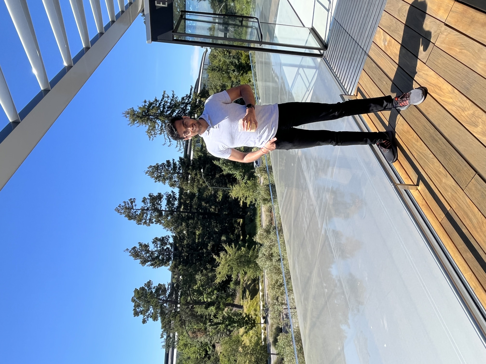

About Me

I am a Machine Learning Engineer at Balbix, where I'm diving deep into the world of AI and cybersecurity. My journey blends strategic brilliance, and a true passion for software engineering. With a solid background in Computer Science and Mathematics, I'm all about chasing excellence in everything I do.
I bring a winning mindset to the table and approach my work with determination and a commitment to excellence. I set ambitious goals and diligently pursue them, whether it's crafting innovative machine learning algorithms or effectively conveying ideas. I'm recognized for my sharp, innovative thinking and my ability to create efficient software solutions.
Work
Machine Learning Engineer
Balbix
I am currently a Machine Learning Engineer at Balbix where I am developing deep learning algorithms for statistical modeling of enterprise cybersecurity risk within a confidential
project environment. I am applying AI-supported data-mining techniques to address modeling, recommendation, and threat detection.
AI/ML Intern
Balbix
As a summer intern at Balbix, I designed a highly efficient and scalable graph database using Neo4j that allows clients to consolidate and visualize
data from 30,000+ companies and approximately 201,000 potential cyber-attacks and breaches. I further reduced the existing identification time for potential risks by 60% and implemented a feature to provide
recommendations for prevention methods at runtime for an asset. At the end, I containerized the database using Kubernetes to automate graph updates and reformations, and reduced
dashboard-server latency and query time by 54%.
Software Developer
BUILD UMASS
With an organization of over 50 members, I engineered versatile and high-performing software solutions for 12 local businesses, employing a range of
technologies including React Native, Expo, and Docker. I also co-led development of a user-friendly Period Tracker app for underprivileged women in collaboration with SAS.
Integrated push notifications and data visualization tools, empowering users to track menstrual cycles and
symptoms effectively
Undergraduate Course Assistant
Manning College of Information and Computer Science
I aided 250+ students in comprehending course material and completing projects for a course on Search Engines,
offering individualized assistance and resources. It was my aim to create a supportive and engaging learning environment through group problem-solving sessions and discussions
on connecting course content to real-life use cases.
Software Engineering Intern
Net Solutions
As my first professional software development experience, I Automated client web application features to improve speed and reliability, eliminating the need for user
interference. I conducted and executed 130+ cross-platform unit tests to ensure consistent performance of websites.
Projects and Technical Skills

Stratton Sentiment
Stratton Sentiment is an iOS app that leverages the FinancialBERT model for sentiment analysis on news articles related to user-invested
stocks, providing valuable insights about the market. With integrated Perigon, the app support up-to-the-minute financial news updates, keeping users informed about relevant
developments impacting their investments. I crafted an intuitive interface with interactive visualizations, facilitating seamless navigation and informed
decision-making.
Go-Grad| Python
Go-Grad automates the process of new grad job hunting using web scraping and programmable communication tools.
It scrapes over 10 GitHub repositories containing job postings using Selenium and periodically monitors updates.
It then communicates with Twilio's SMS API to alert user by text when new postings are released.
Portfolio Website | HTML, CSS, Javascript
This website is a second iteration and is made primarily using HTML, CSS, and Javascript to present my skills and qualifications along with my journey as a software engineer.
I aimed to design a clean and visually apppealing interface to effectively communicate my experiences.
I utilized CSS for styling and animation to enhance the overall user experience.
Dev-Has-Data | Javascript
DevHasData is a Microsoft Azure Cloud hosted bot authenticated by OAuth2 that communicates with Discord's REST API and is used by over 300 users.
It uses Node-Fetch to access the university directory in order to assist students in accessing information (major, e-mail) about their fellow classmates.
DevCoin| Java
This is a Blockchain Model designed to implement a raw cryptocurrency mining and transacting system to depict processes using in cryptography that allows users to create a wallet and ensure
its safety by generating public and private keys using Elliptic Curve Cryptography.
It also allows secure transfer of funds using ECDSA to verify signatures.
Skills
Languages: Java, Python, C/C++, Objective-C, HTML/CSS, Javascript, Cypher, MATLAB, SQL, Swift
Libraries and Frameworks: React.js, React Native, Flask, Node.js, Neo4j, Tensorflow, Redis, PyTorch
Developer Tools: Kubernetes, Docker, Apache Spark, Google Cloud Platform, AWS (EC2, S3), Microsoft Azure, Bootstrap